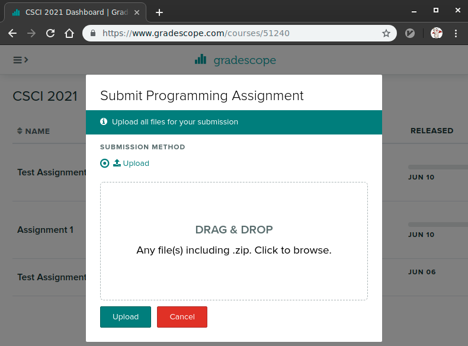

CSCI 5451 Assignment 2: Distributed and Shared Memory Programming
- Due: Wed 12/15/2021 by 11:59 pm
- Approximately 30% of total grade
- Submit to Gradescope Submission Not Yet Open
- You may work in groups of 2 and submit one assignment per group.
CODE DISTRIBUTION: a2-code.zip
CHANGELOG: Empty
Table of Contents
1 Overview
The assignment involves programming in MPI and OpenMP then describing the results of running your programs with several different parameter sets. It is a programming assignment so dust off your C skills. We have to spent some class discussing issues related to the assignment but it may be a good idea to review the lecture videos for when this took place earlier in the semester. It will pay to start early to get oriented as debugging parallel programs can be difficult and requires time.
There are 3 problems to solve.
- Parallelize the heat program from A1 using MPI
- Parallelize a provided Pagerank algorithm using MPI
- Parallelize a provided Pagerank algorithm using OpenMP
For all 3 problems, after finishing your code, you will need to run some timing experiments and describe the results in a short text file.
2 Download Code and Setup
Download the code pack linked at the top of the page. Unzip this which will create a project folder. Create new files in this folder. Ultimately you will re-zip this folder to submit it.
| File | State | Notes |
|---|---|---|
| ALL PROBLEMS | ||
A2-WRITEUP.txt |
EDIT | Fill in timing tables and write answers to discussion questions |
Makefile |
Provided | Build file to compile all programs |
testy |
Testing | Test running script |
test_mpi.supp |
Testing | Suppression file to get Valgrind to hide some library errors |
| PROBLEM 1 | ||
heat_mpi.c |
CREATE | Problem 1 parallel version of heat |
heat_serial.c |
Provided | Problem 1 serial version of the heat problem |
heat-run-jobs.sh |
Provided | Problem 2 script to generate timing for heat |
test_heat.org |
Testing | Problem 1 tests for heat program |
| PROBLEMS 2/3 Support | ||
densemat.c |
Provided | Utility functions for dense matrices used in pagerank |
densemat.h |
Provided | Header for dense matrix utilities |
graphs/tiny-20.txt |
Data | Very small graph file for pagerank testing |
graphs/notredame-100.txt |
Data | Small graph file for pagerank testing |
| … | ||
graphs/notredame-8000.txt |
Data | Large graph file for pagerank testing |
hostfile-veggie-ip.txt |
Provided | Hostfile for MPI runs on CSE Labs veggie cluster |
mpiopts.sh |
Provided | Script to set MPIOPTS environment variable |
| PROBLEM 2 | ||
dense_pagerank_mpi.c |
CREATE | Problem 2 parallel version of pagerank |
dense_pagerank_serial.c |
Provided | Problem 2 serial version of pagerank |
dense-pagerank-mpi-jobs.sh |
Provided | Problem 2 script to generate timing for pagerank |
test_pagerank_mpi.org |
Testing | NOT YET AVAILABLE: Problem 2 tests for pagerank |
| PROBLEM 3 | ||
dense_pagerank_omp.c |
CREATE | Problem 3 parallel version of pagerank |
dense_pagerank_serial.c |
Provided | Problem 3 serial version of pagerank |
dense-pagerank-mpi-jobs.sh |
Provided | Problem 3 script to generate timing for pagerank |
test_pagerank_omp.org |
Testing | NOT YET AVAILABLE: Problem 3 tests for pagerank |
3 A2-WRITEUP.txt Writeup File
Below is a blank copy of the writeup document included in the code pack. Fill in answers directly into this file as you complete your programs and submit it as part of your upload.
____________
A2 WRITEUP
____________
GROUP MEMBERS
-------------
- Member 1: <NAME> <X500>
- Member 2: <NAME> <X500>
Up to 2 people may collaborate on this assignment. Write names/x.500
below. If working alone, leave off Member 2.
ONLY ONE GROUP MEMBER NEEDS TO SUBMIT TO GRADESCOPE.
Problem 1: heat_mpi
===================
heat_mpi Timing Table
~~~~~~~~~~~~~~~~~~~~~
Fill in the following table on measuring the performance of your
`heat_mpi' program on the Veggie cluster. Replace 00.00 entries with
your actual run times. You can use the provided `heat-run-jobs.sh'
script to ease this task.
-----------------------------
Width
Procs 6400 25600 102400
-----------------------------
1 00.00 00.00 00.00
2 00.00 00.00 00.00
4 00.00 00.00 00.00
8 00.00 00.00 00.00
10 00.00 00.00 00.00
16 00.00 00.00 00.00
32 00.00 00.00 00.00
64 00.00 00.00 00.00
128 00.00 00.00 00.00
-----------------------------
heat_mpi Discussion Questions
~~~~~~~~~~~~~~~~~~~~~~~~~~~~~
Analyze your table of results and answer the following questions.
1. Did using more processors result in speedups?
2. Describe any trends or anomalies you see in the timings and
speculate on their causes - e.g. was there are a steady increase in
runtimes, steady decrease, or jagged changes in timing?
3. Try to explain how number of processors and problem size seem to
affect runtimes/speedup in the problem. Consider what happens on an
MPI run when the original host does not have enough processors to
available to support running on the original machine and must start
communicating with a networked machine mentioned in the `hostfile'.
Problem 2: dense_pagerank_mpi
=============================
dense_pagerank_mpi Timing Table
~~~~~~~~~~~~~~~~~~~~~~~~~~~~~~~
Fill in the following table on measuring the performance of your
`dense_pagerank_mpi' program on the Veggie cluster. Replace 00.00
entries with your actual run times. You can use the provided
`dense-pagerank-mpi-jobs.sh' script to ease this task.
The columns are for the notredame-XXXX.txt graphs
----------------------------
size
Procs 501 8000 16000
----------------------------
1 00.00 00.00 00.00
2 00.00 00.00 00.00
4 00.00 00.00 00.00
8 00.00 00.00 00.00
10 00.00 00.00 00.00
16 00.00 00.00 00.00
32 00.00 00.00 00.00
64 00.00 00.00 00.00
128 00.00 00.00 00.00
----------------------------
dense_pagerank_mpi Discussion Questions
~~~~~~~~~~~~~~~~~~~~~~~~~~~~~~~~~~~~~~~
Analyze your table of results and answer the following questions.
1. Did using more processors result in speedups?
2. Describe any trends or anomalies you see in the timings and
speculate on their causes - e.g. was there are a steady increase in
runtimes, steady decrease, or jagged changes in timing?
3. Try to explain how number of processors and problem size seem to
affect runtimes/speedup in the problem. Consider what happens on an
MPI run when the original host does not have enough processors to
available to support running on the original machine and must start
communicating with a networked machine mentioned in the `hostfile'.
Problem 3: dense_pagerank_omp
=============================
dense_pagerank_omp Timing Table
~~~~~~~~~~~~~~~~~~~~~~~~~~~~~~~
Fill in the following table on measuring the performance of your
`dense_pagerank_omp' program on the Veggie cluster. Replace 00.00
entries with your actual run times. You can use the provided
`dense-pagerank-omp-jobs.sh' script to ease this task.
The columns are for the notredame-XXXX.txt graphs
----------------------------
size
Procs 501 8000 16000
----------------------------
1 00.00 00.00 00.00
2 00.00 00.00 00.00
4 00.00 00.00 00.00
8 00.00 00.00 00.00
10 00.00 00.00 00.00
16 00.00 00.00 00.00
32 00.00 00.00 00.00
64 00.00 00.00 00.00
128 00.00 00.00 00.00
----------------------------
dense_pagerank_omp Discussion Questions
~~~~~~~~~~~~~~~~~~~~~~~~~~~~~~~~~~~~~~~
Analyze your table of results and answer the following questions.
1. Did using more processors result in speedups?
2. Describe any trends or anomalies you see in the timings and
speculate on their causes - e.g. was there are a steady increase in
runtimes, steady decrease, or jagged changes in timing?
3. Try to explain how number of processors and problem size seem to
affect runtimes/speedup in the problem. Consider the number of
physical cores which are on the Veggie machines (obtainable via
`lscpu').
4. Compare these timings to your MPI results (if available) and
indicate whether the distributed memory or shared memory seems
favorable according to your results.
OPTIONAL MAKEUP Problem 4
=========================
If working on the optional MAKEUP problem, add information described
in the assignment specification here.
4 mpi_hello.c: A Sample MPI Program
A simple sample program called mpi_hello.c is provided as part of
the code distribution. This program includes a useful utility for
debugging purposes.
dprintf(fmt,...)is likepprintf()except that it only prints if the environment variableDEBUGis set as is shown in the run below. This enables debugging messages to be printed but disabled during normal runs.
Compiling and running the program can be done locally on any machine with MPI installed as follows.
>> . mpiopts.sh # set the MPIOPTS environment variable >> mpirun $MPIOTS -np 4 ./mpi_hello # run the code normally Hello world from process 0 of 4 (host: val) Hello from the root processor 0 of 4 (host: val) Hello world from process 2 of 4 (host: val) Hello world from process 1 of 4 (host: val) Hello world from process 3 of 4 (host: val) >> DEBUG=1 mpirun -np 4 ./mpi_hello # enable debug messages for this run Hello world from process 2 of 4 (host: val) Hello world from process 3 of 4 (host: val) Hello world from process 1 of 4 (host: val) |DEBUG Proc 002 / 4 PID 1484871 Host val| Debug message from processor 2 |DEBUG Proc 003 / 4 PID 1484872 Host val| Debug message from processor 3 |DEBUG Proc 001 / 4 PID 1484870 Host val| Debug message from processor 1 Hello world from process 0 of 4 (host: val) Hello from the root processor 0 of 4 (host: val) |DEBUG Proc 000 / 4 PID 1484869 Host val| Debug message from processor 0
Debug printing takes time and should be turned off when reporting
runtimes for programs. Using the shell commands below ensures that the
DEBUG environment variable is unset so debug printing is turned off
for further runs.
>> echo $DEBUG # check value of DEBUG env var 1 # currently defined >> unset DEBUG # unset it to remove it >> echo $DEBUG # now has no value >> mpirun -np 4 ./mpi_hello # this run has no debug output P 0: Hello world from process 0 of 4 (host: val) Hello from the root processor 0 of 4 (host: val) P 2: Hello world from process 2 of 4 (host: val) P 3: Hello world from process 3 of 4 (host: val) P 1: Hello world from process 1 of 4 (host: val)
NOTE: the dpprintf() function is somewhat inefficient even when
debug output is turned off as it requires calls to getenv(). There
are more efficient alternatives to this that involve macros but that
also involves recompiling code. Since this is a learning exercise we
can tolerate some performance hits in the name of easier debugging. In
the wild you may want to consider alternative debug printing
techniques.
5 Problem 1: Parallel Heat (25%)
5.1 The Heat Problem
A slightly modified version of the heat propagation simulation from
HW1 and in-class discussion is in the code pack and called
heat_serial.c. This program can be compiled and run with the
provided Makefile as follows.
>> make heat_serial # build program gcc -g -Wall -o heat_serial heat_serial.c >> ./heat_serial # run with no args to show help info usage: ./heat_serial max_time width print max_time: int width: int print: 1 print output, 0 no printing >> ./heat_serial 10 8 1 # run for 10 timesteps with 8 "elements" | 0 1 2 3 4 5 6 7 ---+------------------------------------------------- 0| 20.0 50.0 50.0 50.0 50.0 50.0 50.0 10.0 1| 20.0 35.0 50.0 50.0 50.0 50.0 30.0 10.0 2| 20.0 35.0 42.5 50.0 50.0 40.0 30.0 10.0 3| 20.0 31.2 42.5 46.2 45.0 40.0 25.0 10.0 4| 20.0 31.2 38.8 43.8 43.1 35.0 25.0 10.0 5| 20.0 29.4 37.5 40.9 39.4 34.1 22.5 10.0 6| 20.0 28.8 35.2 38.4 37.5 30.9 22.0 10.0 7| 20.0 27.6 33.6 36.3 34.7 29.8 20.5 10.0 8| 20.0 26.8 32.0 34.1 33.0 27.6 19.9 10.0 9| 20.0 26.0 30.5 32.5 30.9 26.5 18.8 10.0 >> ./heat_serial 10 8 0 # same run but don't print output, useful for timing as output takes a while >> ./heat_serial 12 5 1 # run for 12 timesteps with 5 columns / elements | 0 1 2 3 4 ---+------------------------------- 0| 20.0 50.0 50.0 50.0 10.0 1| 20.0 35.0 50.0 30.0 10.0 2| 20.0 35.0 32.5 30.0 10.0 3| 20.0 26.2 32.5 21.2 10.0 4| 20.0 26.2 23.8 21.2 10.0 5| 20.0 21.9 23.8 16.9 10.0 6| 20.0 21.9 19.4 16.9 10.0 7| 20.0 19.7 19.4 14.7 10.0 8| 20.0 19.7 17.2 14.7 10.0 9| 20.0 18.6 17.2 13.6 10.0 10| 20.0 18.6 16.1 13.6 10.0 11| 20.0 18.0 16.1 13.0 10.0
5.2 MPI Heat
The central task of this problem is to create an MPI version of this
program named heat_mpi which performs the same task but uses MPI
calls to perform the heat calculations on distributed memory
machines. Once completed, this program can be run as follows.
>> make heat_mpi # build MPI version of heat program mpicc -g -Wall -o heat_mpi heat_mpi.c >> source mpiopts.sh # set the MPIOPTS env variable, used to suppress warnings >> mpirun $MPIOPTS -np 2 ./heat_mpi 10 8 1 # run using 2 procs, 10 steps, 8 elements = 4 per proc | 0 1 2 3 4 5 6 7 ---+------------------------------------------------- 0| 20.0 50.0 50.0 50.0 50.0 50.0 50.0 10.0 1| 20.0 35.0 50.0 50.0 50.0 50.0 30.0 10.0 2| 20.0 35.0 42.5 50.0 50.0 40.0 30.0 10.0 3| 20.0 31.2 42.5 46.2 45.0 40.0 25.0 10.0 4| 20.0 31.2 38.8 43.8 43.1 35.0 25.0 10.0 5| 20.0 29.4 37.5 40.9 39.4 34.1 22.5 10.0 6| 20.0 28.8 35.2 38.4 37.5 30.9 22.0 10.0 7| 20.0 27.6 33.6 36.3 34.7 29.8 20.5 10.0 8| 20.0 26.8 32.0 34.1 33.0 27.6 19.9 10.0 9| 20.0 26.0 30.5 32.5 30.9 26.5 18.8 10.0 >> mpirun $MPIOPTS -np 4 ./heat_mpi 6 12 1 # run using 4 procs, 6 steps, 12 elements = 3 per proc | 0 1 2 3 4 5 6 7 8 9 10 11 ---+------------------------------------------------------------------------- 0| 20.0 50.0 50.0 50.0 50.0 50.0 50.0 50.0 50.0 50.0 50.0 10.0 1| 20.0 35.0 50.0 50.0 50.0 50.0 50.0 50.0 50.0 50.0 30.0 10.0 2| 20.0 35.0 42.5 50.0 50.0 50.0 50.0 50.0 50.0 40.0 30.0 10.0 3| 20.0 31.2 42.5 46.2 50.0 50.0 50.0 50.0 45.0 40.0 25.0 10.0 4| 20.0 31.2 38.8 46.2 48.1 50.0 50.0 47.5 45.0 35.0 25.0 10.0 5| 20.0 29.4 38.8 43.4 48.1 49.1 48.8 47.5 41.2 35.0 22.5 10.0 >> time mpirun $MPIOPTS -np 4 ./heat_mpi 6 12 0 # same as above but suppress output and time the run real 0m0.168s # wall clock time to report for the run user 0m0.102s sys 0m0.073s
5.3 Features of heat_mpi
- Name your program
heat_mpi.cto be compatible with the providedMakefile. It has a target to build bothheat_serialandheat_mpiif you name the source fileheat_mpi.c. The serial version of the program provided accepts 3 command line arguments:
- Number of time steps (rows in output)
- Width of the rod in elements (columns of output)
- 1 or 0 to indicate whether final output should be printed or suppressed.
The MPI version should allow for the same arguments so that runs like the following will work.
>> mpirun $MPIOPTS -np 4 ./mpi_heat 10 40 1 # 4 procs, 10 timesteps, width 40, show output ... # output for the run >> mpirun $MPIOPTS -np 4 ./mpi_heat 10 40 0 # same but no output >>
There is a small script called
mpiopts.shwhich can set options for MPI runs to suppress unnecessary warning messages. While experimenting with your programs in a shell, you can source this script via the following.>> source mpiopts.sh # sets variable MPIOPTS >> echo $MPIOPTS # show value of MPIOPTS --mca opal_warn_on_missing_libcuda 0 >> . mpiopts.sh # same as using "source" to execute script in current shell
- Divide the problem data so that each processor owns only a portion of the columns of the heat matrix as discussed in class.
- Utilize send and receives or the combined
MPI_Sendrecvto allow processors to communicate with neighbors. - Utilize a collective communication operation at the end of the computation to gather all results on Processor 0 and have it print out the entire results matrix if command line args indicate this is necessary.
- Verify that the output of your MPI version is identical to the output of the serial version which is provided. There are a series of automated tests that help with this which are described later.
- To be compatible with the automated tests,
heat_mpimust produce an exit code of 0; e.g.return 0at the end ofmain()as is done inheat_serial.c. Your MPI version is only required to work correctly in the following situations:
- The width of the rod in elements is evenly divisible by the number of processors being run.
- The width of the rod is at least three times the number of processors so that each processor would have at least 3 columns associated with it.
That means the following configurations should work or fail as indicated.
#Procs Width Works? Notes 1 1 no not enough cols 1 2 no not enough cols 1 3 yes take special care for 1 proc 4 4 no only 1 column per proc 4 8 no only 2 columns per proc 4 12 yes at least 3 cols per proc 4 16 yes at least 3 cols per proc 4 15 no uneven cols 3 9 yes 3 cols per proc, evenly divisible 4 40 yes evenly divisible, >= 3 cols per proc Runs that are marked with "no" in the "Works?" column will not be tested so are free to do anything (segfault, work correctly, print an error and exit immediately, etc.).
5.4 Written Summary of the heat_mpi Results
Included with the project code is the file A2-WRITEUP.txt which has
a timing table to fill in and a few discussion questions which should
be answered.
Time your runs on the Veggie Cluster. You can SSH into any of the following machines to do the timing.
csel-broccoli.cselabs.umn.edu csel-carrot.cselabs.umn.edu csel-potato.cselabs.umn.edu csel-radish.cselabs.umn.edu csel-spinach.cselabs.umn.edu
Gathering data for the timing table is eased via the provided
heat-run-jobs.sh program which will run jobs with each of the
parameters in the timing table listed. A log file is created with
output and times for each of the jobs. One can quickly extract the
timings for each job with the grep command.
>> ./heat-run-jobs.sh Output stored in the file 'heat-timings.Fri_19_Nov_2021_04:30:13_PM_CST.log' mpirun --mca opal_warn_on_missing_libcuda 0 -np 1 ./heat_mpi 500 6400 0 mpirun --mca opal_warn_on_missing_libcuda 0 -np 2 ./heat_mpi 500 6400 0 mpirun --mca opal_warn_on_missing_libcuda 0 -np 4 ./heat_mpi 500 6400 0 ... Output stored in the file 'heat-timings.Fri_19_Nov_2021_04:30:13_PM_CST.log' >> grep runtime heat-timings.Fri_19_Nov_2021_04:30:13_PM_CST.log runtime: procs 1 width 6400 realtime 1.234 runtime: procs 2 width 6400 realtime 1.234 runtime: procs 4 width 6400 realtime 1.234 runtime: procs 8 width 6400 realtime 1.234 runtime: procs 10 width 6400 realtime 1.234 runtime: procs 16 width 6400 realtime 1.234 runtime: procs 32 width 6400 realtime 1.234 runtime: procs 64 width 6400 realtime 1.234 runtime: procs 128 width 6400 realtime 1.234 runtime: procs 1 width 12800 realtime 1.234 runtime: procs 2 width 12800 realtime 1.234 runtime: procs 4 width 12800 realtime 1.234 ...
The times above are intentionally listed all as 1.234 to prevent
biasing your own investigations.
5.5 Automated Tests for heat_mpi
A battery of automated tests are provided to evaluate whether
heat_mpi is producing correct results on some small examples. These
are present in the file test_heat.org and are run via the testy
script. This can be done manually or via make test-prob1. Compliant
programs will give results that look like the following.
>> unset DEBUG # enusre that DEBUG output is disabled >> make test-prob1 # build prob1 program and run tests mpicc -g -Wall -o heat_mpi heat_mpi.c ./testy test_heat.org ============================================================ == testy test_heat.org == Running 10 / 10 tests 1) Procs=1 Width=20 : ok 2) Procs=1 Width=20 Valgrind : ok 3) Procs=2 Width=20 : ok 4) Procs=2 Width=20 Valgrind : ok 5) Procs=2 Width=20 No output : ok 6) Procs=2 Width=6 : ok 7) Procs=2 Width=6 Valgrind : ok 8) Procs=4 Width=20 : ok 9) Procs=4 Width=20 Valgrind : ok 10) Procs=4 Steps=30 Width=40 : ok ============================================================ RESULTS: 10 / 10 tests passed
Failed tests will provide a results file with information that can be studied to gain insight into detected problems with the programs.
Tests are limited to 4 processors max. Some tests run codes under Valgrind to detect memory problems and help diagnose segmentation faults.
5.6 Grading Criteria for Problem 1 grading 25
| CRITERIA | |
|---|---|
| 10 | Code compiles via make heat_mpi and passes automated tests via make test-prob1 |
| 5 | Cleanly written code with good documentation according to a Manual Inspection |
| 5 | Written report includes timings table described above |
| 5 | Written report includes answers to discussion questions written above. |
6 Page Rank
6.1 Overview of Computing Pageranks
A key to Google's early success was its ability of its search engine to identify web pages which seemed important to user search queries. A key component of their engine was and remains an importance metric metric called Pagerank, so named due to its ranking a web page and the author of the algorithm is Larry Page (history is has a splendid sense of irony). The pagerank has a beautiful theory behind it which involves modeling web users as random walkers through hyperlinked pages. On arriving at a page, a user randomly selects a link and visits it. This process is repeated on the next page, and the next page, and so forth. With a small probability, a user may randomly jump to some arbitrary other page which is not linked to the present one. According to this formalism, pagerank represents the probability of finding a user on a given page at a particular moment in time. A page with many incoming links to it has a higher probability of being visited as many other pages have "voted" for its importance. A page with many outgoing links contributes little to importance of any linked pages: its votes are spread very thin. This rough sort of voting turned out to be a good measure of the importance of page, at least in the early 2000s before web denizens learned to manipulate the algorithm.
It turns out that if the network of links web pages is represented as a certain matrix, the page ranks are identical to a particular eigenvector of that matrix. There are several interesting facets to this relationship for the mathematically inclined and good reading on the subject comes from a survey by Bherkin. The bottom line is that any algorithms for computing an eigenvector of a matrix can be used to compute page ranks. A classical iterative technique to compute eigenvectors is the Power Method which involves repeatedly multiplying a vector by a matrix. Matrix-vector multiplication is a ripe operation for parallelization and your primary task will be to parallelize this process for the pagerank computation.
A code is provided called dense_pagerank_serial.c which performs pagerank
serial computations. In high-level terms the computation breaks down
as follows.
- Load data for a matrix of web page links (link matrix). Each
page is numbered 0 to
N-1whereNis the total number of pages. The file format is simply pairs of numbers of one page pointing to another one. Loading the file involves allocating memory for the entire matrix, zeroing each entry, then filling a 1 into each row/col entry indicated by the file. - Normalize columns by summing each column in the matrix, then dividing each entry in a column by the sum of the column.
- Apply a damping factor which allows random warping from one page to another. The math on this is a little funky, but the intent is to make each nonzero entry in the matrix a little smaller and each zero entry nonzero so there is a chance of jumping to an arbitrary page. See the code for the specific math involved with the update. A typical damping factor is 0.85: 85% chance of visiting a link on the page and 15% change of jumping an arbitrary unlinked page. This modifies the initial Link matrix once at the beginning of the pagerank calculation.
- Initialize pageranks to be equal for each page and so that the pageranks sum to 1. If there are 10 pages, each page initially has a pagerank of 0.1; with 100 pages each has 0.01. Only the relative size between ranks is important.
- Multiply the link matrix by the pageranks according to the standard matrix-vector multiplication algorithm. Store the results in a second array of numbers. This second array of numbers is now the new pageranks. Assign this back to the array of old pageranks after checking for convergence.
- Repeat step 5 of creating new pageranks by multiplying the link matrix by the old pageranks. Continue repeating this until there is very little change between new and old pageranks. At this point, the solution has converged.
This algorithm is a good example of iterative algorithms: it is not known ahead of time how many steps will be required to converge but steady progress should be made as indicated by the old and new pagerank vectors being closer and closer together.
Note that due to the columns of the link matrix and the vector of pageranks being positive and summing to 1, the results of their multiplication should also sum to 1 (e.g. the new pageranks also sum to 1). The code presently reports the norm of the vector as this sum and it should remain 1 throughout the computation.
It should be mentioned that the provided code is a dense version of the pagerank: every element of the link matrix has memory allocated to it. Unsurprisingly, a production version of the code would use sparse matrices instead where the many zero entries of the matrix are represented implicitly to save a tremendous amount of memory. While the dense algorithm is easier to parallelize than the sparse, the dense version is woefully inappropriate for the enormous size of Google-scale pagerank computations involving 30,000,000,000,000+ web pages. It is a computation that necessitates parallelism at a sickening scale but is reasonably approximated by the present code.
Take some time to examine the code provided carefully.
6.2 Sample Runs of dense_pagerank_serial.c
Part of the code distribution includes some graph files which you can
use for experimentation and timing analysis of your code. Each graph
is named after its size and content. The notredame graphs are
derived from a real dataset of web sites in the Notre Dame domain. The
full set is available here though will require a bit of processing to
be used with this code and is extremely large for a dense pagerank
calculation.
Start by experimenting with the small graphs like tiny-20.txt which
has only 20 nodes in it and 200 links between pages.
>> ls graphs/*.txt graphs/notredame-100.txt graphs/notredame-2000.txt graphs/notredame-8000.txt graphs/notredame-16000.txt graphs/notredame-501.txt graphs/tiny-20.txt >> make dense_pagerank_serial gcc -g -Wall -o dense_pagerank_serial dense_pagerank_serial.c densemat.c -lm >> dense_pagerank_serial graphs/tiny-20.txt 0.85 Loaded graphs/tiny-20.txt: 20 rows, 200 nonzeros Beginning Computation ITER DIFF NORM 1: 1.78e-01 1.00e+00 2: 3.85e-02 1.00e+00 3: 7.27e-03 1.00e+00 4: 1.32e-03 1.00e+00 5: 2.12e-04 1.00e+00 CONVERGED PAGE RANKS 0.04779640 0.04147775 0.04912589 0.03965692 0.05845908 0.04394957 0.02513647 0.04369224 0.05522195 0.07147504 0.05889092 0.06569723 0.05264261 0.03913282 0.05423814 0.05833793 0.04308603 0.06827848 0.03697897 0.04672553
The progress at each iteration is reported: the DIFF column should
get progressively smaller while the NORM column should remain 1
throughout. After convergence, the pageranks of the 20 pages are
printed.
The largest graph you should work with is notredame-8000.txt
which has 8000 web sites involved in it leading to an 8000 by 8000
link matrix. Running this through the serial code looks like the
following. Note that the output will be long (8000+ lines) so it is
put into the file output.txt and examined using the head command
to display the first few lines.
>> ls graphs/*.txt graphs/notredame-100.txt graphs/notredame-2000.txt graphs/notredame-8000.txt graphs/notredame-16000.txt graphs/notredame-501.txt graphs/tiny-20.txt >> dense_pagerank_serial graphs/notredame-8000.txt 0.85 > output.txt >> head -50 output.txt Loaded graphs/notredame-8000.txt: 8000 rows, 27147 nonzeros Beginning Computation ITER DIFF NORM 1: 1.26e+00 1.00e+00 2: 7.92e-01 1.00e+00 3: 4.24e-01 1.00e+00 4: 2.48e-01 1.00e+00 5: 1.50e-01 1.00e+00 6: 9.45e-02 1.00e+00 7: 6.23e-02 1.00e+00 8: 4.11e-02 1.00e+00 9: 2.73e-02 1.00e+00 10: 1.91e-02 1.00e+00 11: 1.31e-02 1.00e+00 12: 9.24e-03 1.00e+00 13: 6.74e-03 1.00e+00 14: 4.91e-03 1.00e+00 15: 3.75e-03 1.00e+00 16: 2.81e-03 1.00e+00 17: 2.16e-03 1.00e+00 18: 1.64e-03 1.00e+00 19: 1.27e-03 1.00e+00 20: 9.79e-04 1.00e+00 CONVERGED PAGE RANKS 0.00227804 0.00044506 0.00001875 0.00051994 0.00156742 0.00015092 0.00087703 0.00111392 0.00123884 0.00081005 0.00252026 0.00359624 0.00007052 ...
7 Problem 2: MPI PageRank (50%)
Parallelize the provided dense_pagerank_serial.c code for
distributed systems. Call your code dense_pagerank_mpi.c as this is
the convention that is supported by provided Makefile.
7.1 Reading Data Files
The program starts with reading input from a file which should be done only on the root processor. After reading the whole matrix into the root processor, send chunks of the matrix to each processor for the main part of the algorithm.
The serial code uses a densemat_t structure to store the matrix.
This structure uses a trick.
- All elements are stored in a linear array called
all. This allows linear index access viamat->all[i] - An array of pointers called
datapoints to the beginning of each row in the matrix. This allows row/col access viamat->data[r][c]. - As a consequence of the linear array, sequential rows are stored in
adjacent memory. In a 10 by 10 matrix, rows 0, 1, and 2 are stored
in elements 0-29 of
mat->all. This makes it possible to send multiple adjacent rows with single communications.
7.2 Row Partitioning Woes
The main source of parallelism is obtained by dividing up the link matrix so that each processor owns a collection of whole rows. This is effective as matrix vector multiplication relies on multiplying a whole row by a column vector (the pageranks in this case).
Do not assume that the number of rows in the link matrix is evenly divisible by the number of processors. Make your code more flexible than that. This, unfortunately, means dealing with some minutia as not every processor will send or receive the same number of elements. As a suggested approach, do the following
- First, assume the number of rows is evenly divisible by the number
of processors and use simple MPI calls like
MPI_ScatterandMPI_Allgatherwhich assume every processor will receive the same number of elements. Make sure that this version works on some of the input graphs for numbers of processors that evenly divide the size. - When you are confident in your code above, make a backup copy of it for safekeeping.
- Now take the plunge and switch to the MPI vector calls which allow
one to specify then number of elements each processor will receive:
functions like
MPI_ScattervandMPI_Allgatherv(notice thevat the end) take additional parameter arrays of the counts of elements for each processor and the offsets into storage arrays where those elements reside. These more complex invocation may seem tedious, but all that is really required is to set up arrays indicating the counts elements on each processor and pass those in. Establish these arrays near the beginning of the program and use them throughout.
7.3 Parallelizing Column Normalization and Damping
It is suggested that you initially let the root processor read the whole matrix, normalize the rows, apply the damping factor, then scatter the matrix rows to each processor. That way the serial code can be used to ensure normalization and damping is correct.
Later, revisit the column normalization and damping to parallelize it.
- Scatter the unnormalized link matrix rows to each process
- Have each process compute an array of its own column sums
- Use a all-to-all reduction so that every processor has the sums of
all columns. Investigate a good MPI function for this all-to-all
reduction and potentially use the
MPI_IN_PLACEconstant to save yourself some allocations of buffers (the manual pages for relevant MPI functions describe this option). - Have each processor divide each of its elements by the appropriate column sum.
- Have each processor apply the damping factor adjustment to each of its elements.
7.4 Parallelizing the Repeated Matrix-vector Multiplication
The main computation loop involves repeatedly multiplying the link matrix by the vector or pageranks. In the parallel version, each processor has some whole rows of the link matrix. Note the consequences of this decomposition.
- Each processor has some link matrix rows but must have the whole vector of old pageranks to do the multiplication
- After completing the multiplication, each processor will contain only part of the new pagerank vector and must communicate its portion of to all other processors for the next multiplication to occur.
- After each multiplication, each processor must also share how much its new pageranks differ from the equivalent portion of the old pagerank vector so that all processors can determine if the algorithm has converged.
This will involve several collective communication operations at each iteration to share.
7.5 Written Summary of dense_pagerank_mpi Results
Similar to the first problem, fill in the timing table in
A2-WRITEUP.txt associated with this problem and answer the questions
contained in that section.
Perform your timing on the Veggie Cluster. To speed up your filling in
the timing table, use the provided script dense-pagerank-mpi-jobs.sh
which will run jobs for the parameters in the timing table. One can
grep for the times amid the log file that is created as shown below.
>> ./dense-pagerank-mpi-jobs.sh Output stored in the file 'dense-pagerank-mpi-timings.Fri_19_Nov_2021_04:16:25_PM_CST.log' mpirun --mca opal_warn_on_missing_libcuda 0 -hostfile hostfile-veggie-ip.txt -np 1 ./dense_pagerank_mpi graphs/notredame-501.txt 0.85 mpirun --mca opal_warn_on_missing_libcuda 0 -hostfile hostfile-veggie-ip.txt -np 4 ./dense_pagerank_mpi graphs/notredame-501.txt 0.85 mpirun --mca opal_warn_on_missing_libcuda 0 -hostfile hostfile-veggie-ip.txt -np 10 ./dense_pagerank_mpi graphs/notredame-501.txt 0.85 ... Output stored in the file 'dense-pagerank-mpi-timings.Fri_19_Nov_2021_04:16:25_PM_CST.log' >> grep runtime dense-pagerank-mpi-timings.Fri_19_Nov_2021_04:16:25_PM_CST.log runtime: procs 1 graph notredame-501.txt realtime 1.234 runtime: procs 4 graph notredame-501.txt realtime 1.234 runtime: procs 10 graph notredame-501.txt realtime 1.234 ...
7.6 Automated Tests for dense_pagerank_mpi
Automated tests will be released later.
When the tests are released, you may run them with the provided
Makefile via the following target:
>> make test-prob2 ...
7.7 Grading Criteria for Problem 2 grading 50
| CRITERIA | |
|---|---|
| 10 | Code compiles via make dense_pagerank_mpi, honors command line parameters on integrative runs. |
| 10 | Passes automated tests via make test-prob2 which also checks for memory problems. |
| 10 | Cleanly written code with good documentation according to a Manual Inspection |
| 10 | Written report includes timings table described above |
| 10 | Written report includes answers to discussion questions written above. |
8 Problem 3: OpenMP PageRank (25%)
Similar to Problem 2, in this problem create a version of
dense_pagerank_serial.c which is parallelized for shared memory
systems using OpenMP. Call this program dense_pagerank_omp.c as
this will make it compatible with the provided Makefile.
8.1 Shared Memory Implementation
It is best to start with the Serial Pagerank code and begin augmenting loops via compiler directives. This should prove fairly straight-forward to do for most loops but take the following into consideration.
- Provide brief documentation comments for each loop that you will parallelize
- Pay special attention to any shared data that appears in the loops which one must use synchronization primitives to protect. Comment any atomic actions, critical regions, or reductions that are needed.
- If any loops seem unworthy of parallelizing, comment on this as well. For instance, if you are deciding to parallelize and Inner vs and Outer loop, describe in a few lines your rationale.
- EXCEPTION: Loops that must be serial as they produce output via
printf()do not need to be commented.
8.2 Written Summary of dense_pagerank_omp Results
As before, add fill in the timing table provided in A2-WRITEUP.txt
in the section for Problem 3. The script dense-pagerank-omp.sh is
provided to ease this. Run your experiments on the Veggie cluster.
>> ./dense-pagerank-omp-jobs.sh Output stored in the file 'dense-pagerank-omp-timings.Fri_19_Nov_2021_08:44:39_PM_CST.log' OMP_NUM_THREADS=1 ./dense_pagerank_omp graphs/notredame-501.txt 0.85 OMP_NUM_THREADS=4 ./dense_pagerank_omp graphs/notredame-501.txt 0.85 OMP_NUM_THREADS=10 ./dense_pagerank_omp graphs/notredame-501.txt 0.85 ... Output stored in the file 'dense-pagerank-omp-timings.Fri_19_Nov_2021_08:44:39_PM_CST.log' >> grep runtime dense-pagerank-omp-timings.Fri_19_Nov_2021_08:44:39_PM_CST.log runtime: procs 1 graph notredame-501.txt realtime 1.23 runtime: procs 4 graph notredame-501.txt realtime 1.23 runtime: procs 10 graph notredame-501.txt realtime 1.23 ...
8.3 Automated Tests for dense_pagerank_omp
Automated tests will be released later.
When the tests are released, you may run them with the provided
Makefile via the following target:
>> make test-prob3 ...
8.4 Grading Criteria for Problem 3 grading 25
| CRITERIA | |
|---|---|
| 10 | Code compiles via make dense_pagerank_omp and passes automated tests via make test-prob3 |
| 5 | Cleanly written code with good documentation according to a Manual Inspection |
IMPORTANT: Loop augmented with #pragma directives should have comments describing why |
|
| any special considerations such as race conditions, reductions, inner vs outer loop | |
parallelization, or other considerations. Serial Output printf() loops do not need to |
|
| be documented in this way. | |
| 5 | Written report includes timings table described above |
| 5 | Written report includes answers to discussion questions written above. |
9 Optional MAKEUP Problem 4
An optional Makeup problem will be described here shortly. It is
likely to involve creating a version of dense_pagerank_serial.c
which uses BLAS library calls instead of the hand-coded linear algebra
and then timing the results to compare against the parallel versions.
Additional instructions will be posted shortly.
10 Project Submission on Gradescope
NOTE 1: Submission to Gradescope is not yet open; follow the instructions in this section when it opens.
NOTE 2: The instructions below pertain to another class and some of
the pictures mention "project" and p1-code which in our case is
"assignment" and a2-code. The instructions apply nonetheless and
boil down to:
- Create a zip of your assignment code via
make zip - Upload the code to Gradescope
- Check that the automated tests that run on Gradescope match you expectations.
- Add you partner to your submission. Only one partner should submit the code.
10.1 Submit to Gradescope
Some of the pictures below mention 'Assignment' which is now 'Project' and may mention some files that are not part of the current project. The process of uploading submission is otherwise the same.
In a terminal, change to your project code directory and type make zip which will create a zip file of your code. A session should look like this:
> cd Desktop/5451/a2-code # location of assignment code > ls Makefile dense_pagerank_mpi.c heat_serial.c ... > make zip # create a zip file using Makefile target rm -f a2-code.zip cd .. && zip "a2-code/p1-code.zip" -r "a2-code" adding: a2-code/ (stored 0%) adding: a2-code/Makefile (deflated 68%) adding: a2-code/dense_pagerank_mpi.c (deflated 69%) adding: a2-code/test_dense_pagerank_mpi.org (deflated 71%) ... Zip created in a2-code.zip > ls a2-code.zip a2-code.zipLog into Gradescope and locate and click 'Assignment 2' which will open up submission

Click on the 'Drag and Drop' text which will open a file selection dialog; locate and choose your
a2-code.zipfile
This will show the contents of the Zip file and should include your C source files along with testing files and directories.

Click 'Upload' which will show progress uploading files. It may take a few seconds before this dialog closes to indicate that the upload is successful. Note: there is a limit of 256 files per upload; normal submissions are not likely to have problems with this but you may want to make sure that nothing has gone wrong such as infinite loops creating many files or incredibly large files.
WARNING: There is a limit of 256 files per zip. Doing
make zipwill warn if this limit is exceeded but uploading to Gradescope will fail without any helpful messages if you upload more the 256 files in a zip.
Once files have successfully uploaded, the Autograder will begin running the command line tests and recording results. These are the same tests that are run via
make test.
When the tests have completed, results will be displayed summarizing scores along with output for each batch of tests.

- Don't forget to add you partner to your submission after uploading. Only one partner needs to submit the code.
10.2 Late Policies
You may wish to review the policy on late project submission which will cost 1 Engagement Point per day late. No projects will be accepted more than 48 hours after the deadline.